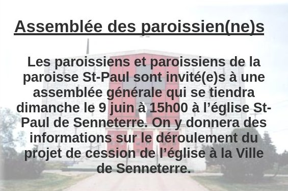

Assemblée générale des paroissien(ne)s (9juin)

Décret de réduction à l’état profane de l’église St-Paul de Senneterre
CONSIDÉRANT que le Code de droit canonique stipule, d’une part, que « les lieux sacrés perdent leur dédicace ou leur bénédiction […] s’ils sont réduits à des usages profanes de façon permanente, soit par décret de l’Ordinaire compétent, soit de fait » (c. 1212) et, d’autre part, que « là où d’autres causes graves conseillent qu’une église ne serve plus au culte divin, l’Évêque diocésain, après avoir entendu le Conseil presbytéral, avec le consentement de ceux qui revendiquent légitimement leurs droits sur cette église et pourvu que le bien des âmes n’en subisse aucun dommage, pour la réduire à un usage profane qui ne soit pas inconvenant » (c. 1222 §2);
CONSIDÉRANT que la Loi sur les fabriques, sanctionnée par le gouvernement du Québec le 6 août 1965, reconnaît à l’évêque d’un diocèse le pouvoir de « réglementer l’exercice du culte dans les églises » (Art. 4d);
CONSIDÉRANT que l’église Saint-Paul à Senneterre, construite depuis 1943, a été bénite le 25 juin 1961 par Mgr Albert Sanschagrin, Évêque d’Amos;
CONSIDÉRANT que la cloche de l’église a aussi été bénite;
CONSIDÉRANT les résultats des commentaires et opinions reçues lors de l’assemblée d’information et de consultation des paroissiens le 12 novembre 2023;
CONSIDÉRANT l’entente de partenariat conclue entre la Fabrique de la paroisse Saint-Paul et la ville de Senneterre, le 22 février 2024, et que, dans ce protocole d’entente, la Fabrique a un droit d’usufruit pour des espaces nécessaires afin d’assurer le culte et les activités paroissiales;
CONSIDÉRANT la résolution unanime de la Fabrique de la paroisse de Saint-Paul de Senneterre, du 6 mars 2024, de se départir de ladite église et de la céder à la ville de Senneterre aux conditions énumérées dans le protocole d’entente conclu entre les parties;
CONSIDÉRANT la lettre qui nous a été adressée, le 7 mars 2024, par le curé de la paroisse Saint-Paul de Senneterre, demandant à l’évêque d’Amos la réduction à un usage profane de l’église Saint-Paul dans le cadre d'une entente de partenariat avec la Ville de Senneterre;
CONSIDÉRANT que le Conseil des affaires économiques a donné son consentement pour cette cession le 4 avril 2024 et que le Collège des consulteurs a donné son contentement le 14 mars 2024, conformément aux dispositions du code de droit canonique;
CONSIDÉRANT la nécessité de réduire à l’état profane l’église Saint-Paul de Senneterre tout en permettant le culte catholique, la conservation des registres et les activités pastorales dans l'espace alloué à la Fabrique;
EN CONSÉQUENCE, en qualité de mon autorité ordinaire, après avoir reçu l’avis favorable du Conseil presbytéral le 18 janvier 2024, je déclare, par les présentes, que l’église Saint-Paul de Senneterre est réduite à l’état profane afin d’en disposer convenablement.
En tenant compte de la particularité de ce décret, le curé est autorisé, si les circonstances le permettent, à conserver le Saint-Sacrement, à poursuivre la célébration des sacrements dans la partie qui demeure à l’usage du culte et à maintenir les signes du culte catholique, à l’intérieur comme à l’extérieur, dans la limite des ententes conclues avec la Municipalité de Senneterre. Selon l’évolution des circonstances, ces clauses devront obligatoirement être ajustées par le curé.
Le présent décret devra être porté à la connaissance des paroissiennes et paroissiens de Saint-Paul, à Senneterre, soit par insertion dans le feuillet paroissial, soit par affichage aux portes du lieu de culte de la paroisse, soit par lecture au prône. La date de publication de ce décret détermine le début de la période de dix jours pour le recours hiérarchique prévu par le canon 1734§2.
Ce décret entrera en vigueur la veille de la signature du contrat de cession notarié avec la municipalité de Senneterre.
Donné à Amos, en trois copies originales, sous ma signature, celle du chancelier et sous le sceau du diocèse d’Amos, ce dix-huitième jour du mois d’avril deux mille vingt-quatre.
Guy Boulanger, Évêque d’Amos
Emmanuel Manirakiza, ptre, Chancelier
Capitation 2024
Afin de garder notre Église bien vivante, votre don est une façon de la conserver au niveau financier pour s’assurer un lieu de culte accueillant et sécuritaire.
Vous pouvez également faire vos dons via la Poste en les adressant à
La Fabrique St-Paul, 700, 8e Avenue, Senneterre, J0Y 2M0.
Équipe de la Joie (recrutement)
Notre mission est d’apporter de la joie aux personnes de notre entourage, surtout celles qui sont seules ou malades. Nous avons besoin de bénévoles pour remplir ce mandat.
Comment ? En soulignant les fêtes (Noël, Pâques, anniversaires), visites, téléphones et toutes initiatives pour contrer l’isolement de nos aînés
Si vous êtes intéressé(e)s à joindre l’équipe de la Joie, vous pouvez donner votre nom au secrétariat au 819-737-2045. Merci !